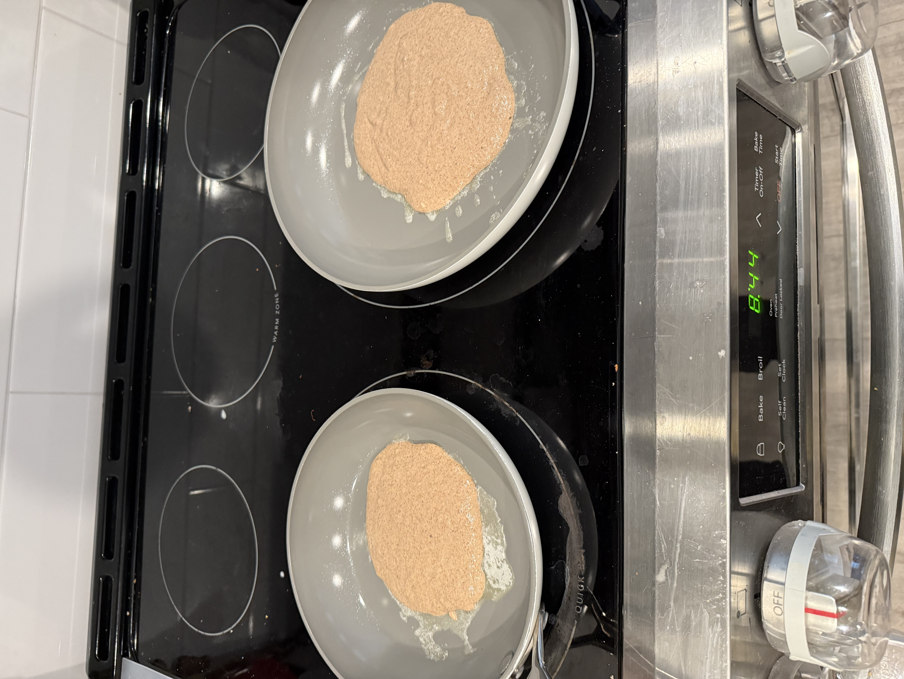

Home
Pancakes

This is my recipe for Kodiak pancakes. Its a simple one which I frequent weekend mornings.
The Kodiak mix is my favorite due to the added protein. If you follow my recipe you'll
have tasty pancakes which aren't too dry and will leave you feeling full.
My recipe makes about 6 decently sized pancakes.
Ingredients
- 2 cups Kodiak pancake mix

- butter(for the pan)
- 1.5 cups of 2%milk or any milk you please
- 2 tablespoons of cinnamon powder or chocolate chips
Steps
- Measure out the 2 cups of Kodiak mix
- Pour the milk into the mix
- Add the cinnamon or chocolate chips
- Mix until you no longer see any powder
If your mixture looks like this, you need to keep mixing

- Heat your stove to low or medium low heat, you don't ever want high heat for pancakes
- When your pan is warm, add butter and spread it all on the surface

- Add mixture to pan, not to much because you want it cook properly

- Before you flip use a rubber spatula to check that the cooking side is brown enough
This is how brown I like them to be
- Remove from stove and add your favorite toppings
Side Note
Make sure you butter after each pancake so that it doesn't stick and burn. You may need to lower heat
a bit after each cake as pan may get hotter and you don't want to risk burning your pancakes. Remember low
and slow